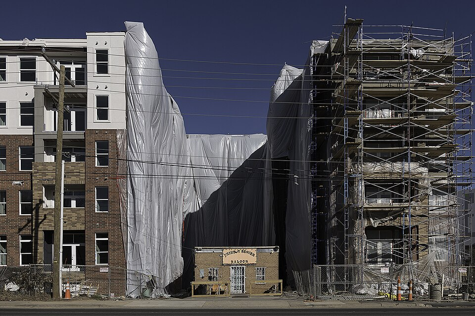

The Famous Holdout
When commercial developers bought the surrounding city block, the Beaver stood its ground. A 323-unit luxury building wraps around the saloon in an iconic horseshoe shape.
Read The Complete Saga →Welcome to The Thirsty Beaver Saloon, Charlotte’s most legendary and unyielding dive bar. Nationally famous for refusing to sell out to high-rise developers—forcing a massive apartment complex to be built directly around its one-story cinderblock walls—the Beaver remains an oasis of real country music, dollar bills pinned to the walls, cheap cold beer, and authentic neighborhood soul.

Cold longnecks, honest pours, cash on the bar, and zero corporate pretension.
When commercial developers bought the surrounding city block, the Beaver stood its ground. A 323-unit luxury building wraps around the saloon in an iconic horseshoe shape.
Read The Complete Saga →Grab a cold PBR tallboy, Miller High Life, Lonestar, or local Charlotte craft pint served in a foam koozie. Pair it with a shot of bourbon or tequila from our classic back bar.
Explore Beer & Shots →Loaded with vintage outlaw country, classic rock, blues, and southern roots. No algorithm—just punch the buttons, drop quarters, and shoot a round of pool under the neon.
Discover Dive Lore →
In September 2021, Rolling Stones frontman Mick Jagger slipped into The Thirsty Beaver on a quiet Wednesday evening before their Bank of America Stadium show. Standing outside on our small patio sipping an ice-cold beer, he went completely unrecognized by local patrons until posting a viral photo the next morning.
Read The Jagger Story →Open 365 days a year from 12:00 PM noon until 2:00 AM. Cash friendly, outdoor bench seating, free pool, and legendary Plaza Midwood camaraderie.
Hours, Directions & Cash Directives →